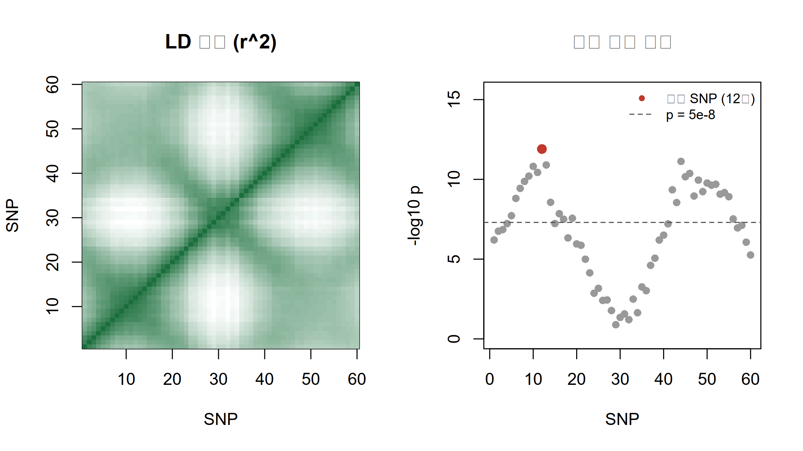
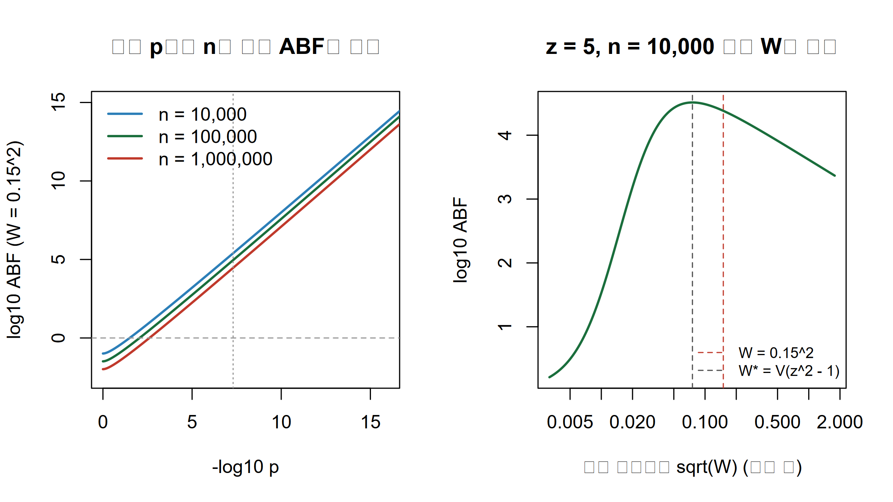
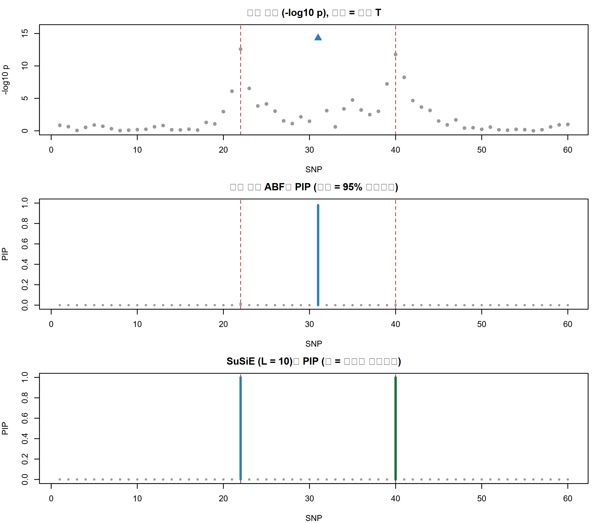
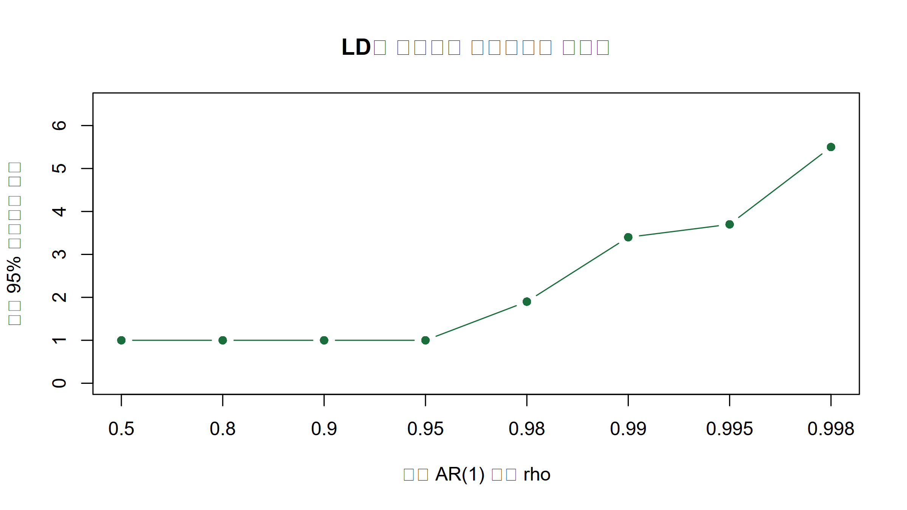
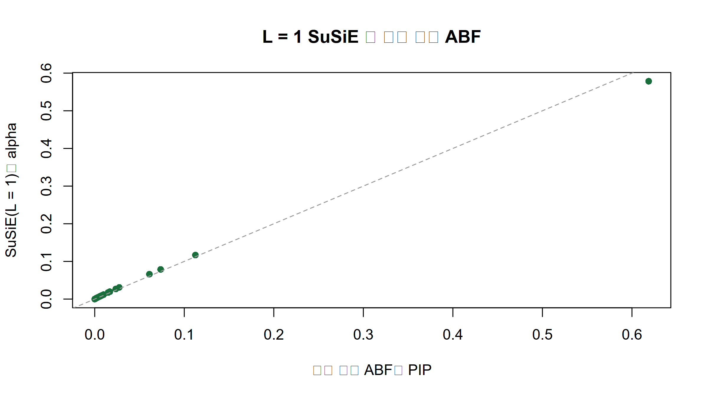

근사 베이즈 인자로 SNP별 인과 사후확률(PIP)과 신용집합을 구하고, 인과 변이가 여럿일 때 SuSiE로 신호를 나누는 법.
Author
Eunji Ha
Published
September 21, 2026
학습 목표
GWAS 좌위에서 p-value 순위가 왜 인과 확률이 아닌지 연관 불균형(LD)으로 설명할 수 있다.
Wakefield 근사 베이즈 인자를 \(\hat\beta\), se, 사전분산 \(W\)로 유도하고 log_abf로 구현할 수 있다.
단일 인과 가정에서 사후포함확률(PIP)과 95% 신용집합을 계산하고, LD 강도와 \(W\)가 신용집합 크기에 주는 영향을 설명할 수 있다.
인과 변이가 둘일 때 단일 인과 가정이 어떻게 실패하는지 보이고, SuSiE의 단일효과회귀와 IBSS를 base R로 구현할 수 있다.
신용집합의 순도, 외부 LD 참조 패널 불일치, 대립유전자 방향 같은 실무 함정을 점검할 수 있다.
혈중 지질 같은 정량 형질(quantitative trait)의 GWAS에서 한 좌위(locus)의 리드 SNP(lead SNP)가 \(p = 10^{-12}\)로 나왔다고 합시다. 주변 SNP 수십 개도 전장유전체 유의수준 \(5\times10^{-8}\)을 넘습니다. 이 SNP들이 모두 형질에 영향을 준다고 보기는 어렵습니다. 대부분은 진짜 인과 변이(causal variant)와 같은 반수체(haplotype)에 함께 실려 다니기 때문에, 곧 연관 불균형(linkage disequilibrium, LD) 때문에 유의하게 보일 뿐입니다. CRISPR 편집이나 리포터 분석으로 넘길 후보는 몇 개로 줄여야 합니다. 그래서 묻고 싶은 것은 두 가지입니다. 각 SNP가 인과 변이일 확률은 얼마인가, 인과 변이를 95% 확률로 담는 가장 작은 SNP 집합은 몇 개짜리인가. p-value는 여기에 답하지 못합니다. p-value는 연관이 없다는 귀무가설 아래에서 데이터가 얼마나 극단적인지를 잴 뿐, 이웃 SNP 사이에 인과 확률을 나눠 주지 않습니다. 세밀 매핑(fine-mapping)은 이 질문을 베이즈 정리로 풉니다. 핵심 재료는 W7의 베이즈 인자입니다.
가상의 좌위 만들기
아래는 모두 가상의 데이터입니다. SNP 60개, 1,500명의 좌위를 만듭니다. 각 반수체에서 SNP 60개의 잠재 변수를 AR(1) 상관(이웃일수록 상관이 큼)을 갖는 다변량정규로 뽑고, SNP마다 대립유전자 빈도에 맞춘 문턱값으로 잘라 0/1로 만듭니다. 사람마다 반수체 둘을 더하면 유전형 0/1/2가 됩니다. 두 SNP의 빈도가 크게 다르면 \(r^2\)의 최댓값이 1보다 작게 묶이므로, 실제 LD 블록처럼 이웃 SNP의 빈도가 비슷하도록 빈도를 천천히 변하게 했습니다. 형질은 12번 SNP 하나만 인과인 모형으로 만들고 표준화합니다. 요약통계는 SNP별 단순회귀 \(y = a + \beta_j x_j + \varepsilon\)의 \(\hat\beta_j\), \(\text{se}_j\), \(z_j = \hat\beta_j/\text{se}_j\)입니다.
ar1 <-function(p, rho) rho^abs(outer(1:p, 1:p, "-")) # 잠재 AR(1) 상관행렬sim_hap <-function(n_hap, sigma_lat, af) { # 반수체(0/1): 잠재 정규를 빈도에 맞춰 자름 p <-ncol(sigma_lat); thr <-matrix(qnorm(1- af), n_hap, p, byrow =TRUE) (matrix(rnorm(n_hap * p), n_hap, p) %*%chol(sigma_lat) > thr) *1}to_geno <-function(h) h[c(TRUE, FALSE), ] + h[c(FALSE, TRUE), ] # 연속한 두 반수체를 더해 0/1/2sumstats <-function(X, y) { # SNP별 단순회귀를 벡터 연산으로 한꺼번에 xc <-scale(X, scale =FALSE); yc <- y -mean(y); n <-length(y) xtx <-colSums(xc^2); beta_hat <-drop(crossprod(xc, yc)) / xtx se <-sqrt((sum(yc^2) - beta_hat^2* xtx) / (n -2) / xtx); z <- beta_hat / sedata.frame(beta_hat = beta_hat, se = se, z = z, p =2*pnorm(-abs(z)))}n <-1500; p <-60; causal <-12set.seed(2026); af <-0.27+0.15*sin(seq(0, 3* pi, length.out = p)) +runif(p, -0.01, 0.01)make_locus <-function(rho, seed, b =0.27) { # 인과 SNP가 12번 하나인 가상의 좌위set.seed(seed); X <-to_geno(sim_hap(2* n, ar1(p, rho), af)) y <-as.numeric(scale(b * X[, causal] +rnorm(n))) # 표준화한 연속 형질list(X = X, y = y, ss =sumstats(X, y))}loc_s <-make_locus(rho =0.998, seed =14); ss <- loc_s$ss; r_ld <-cor(loc_s$X) # LD 행렬 Rlead <-which.max(abs(ss$z)); sec <-order(ss$p)[2]; chk <-summary(lm(loc_s$y ~ loc_s$X[, lead]))$coef[2, 1:2]cat(sprintf("리드 SNP %d, p = %.1e | p < 5e-8 인 SNP %d개 | 2위 SNP %d와 인과 SNP의 r = %.2f | lm 확인 %.4f, %.4f\n", lead, ss$p[lead], sum(ss$p <5e-8), sec, r_ld[causal, sec], chk[1], chk[2]))
리드 SNP 12, p = 1.3e-12 | p < 5e-8 인 SNP 28개 | 2위 SNP 44와 인과 SNP의 r = 0.75 | lm 확인 0.2630, 0.0370
print(round(head(ss[order(ss$p), ], 5), 4))
beta_hat se z p
12 0.2630 0.0370 7.0994 0
44 0.2612 0.0381 6.8474 0
13 0.2516 0.0371 6.7745 0
10 0.2503 0.0371 6.7449 0
11 0.2451 0.0370 6.6168 0
par(mfrow =c(1, 2))image(1:p, 1:p, r_ld^2, col =colorRampPalette(c("white", "#1a6e3c"))(50), main ="LD 행렬 (r^2)", xlab ="SNP", ylab ="SNP")plot(1:p, -log10(ss$p), pch =16, col ="grey60", ylim =c(0, 1.3*max(-log10(ss$p))), main ="주변 연관 신호", xlab ="SNP", ylab ="-log10 p")points(causal, -log10(ss$p[causal]), pch =16, col ="#c0392b", cex =1.3); abline(h =-log10(5e-8), lty =2, col ="grey30")legend("topright", c("인과 SNP (12번)", "p = 5e-8"), col =c("#c0392b", "grey30"), pch =c(16, NA), lty =c(NA, 2), bty ="n", cex =0.8)

리드 SNP는 인과 SNP인 12번이고 \(p = 1.3\times10^{-12}\)입니다. 그런데 유의수준을 넘는 SNP가 28개이고, 두 번째로 강한 44번은 위치상 멀리 떨어져 있지만 인과 SNP와 \(r=0.75\)로 묶여 있어 \(z\)가 거의 같습니다(7.10 대 6.85). lm으로 확인한 리드 SNP의 \(\hat\beta\)와 se도 sumstats와 같습니다.
근사 베이즈 인자
SNP 하나에 대해 두 가설을 비교합니다. \(H_0\)은 효과가 0, \(H_1\)은 효과 \(\beta\)가 사전분포 \(\mathcal{N}(0, W)\)를 따른다는 가설입니다. 표본이 크면 \(\hat\beta \sim \mathcal{N}(\beta, V)\), \(V = \text{se}^2\)로 볼 수 있으므로 개인 수준 자료 없이 \(\hat\beta\)와 se만으로 두 가설의 가능도를 계산할 수 있습니다. \(H_0\) 아래 \(\hat\beta\)의 분포는 \(\mathcal{N}(0, V)\)이고, \(H_1\) 아래에서는 효과 자체가 퍼져 있으므로 \(\mathcal{N}(0, V+W)\)입니다. 관측된 \(\hat\beta\)에서 두 정규 밀도의 비가 근사 베이즈 인자(approximate Bayes factor, ABF; Wakefield 2009)입니다. \(W\)는 효과 크기가 대략 어느 범위일지에 대한 사전 믿음으로, 표준화한 정량 형질에서 coloc의 기본값 \(W = 0.15^2\)(Giambartolomei et al. 2014)을 쓰면 대립유전자당 효과가 95% 사전확률로 \(\pm 0.29\) SD 안에 있다고 보는 셈입니다.
수식으로 보기: Wakefield ABF
\[
\text{ABF} = \frac{\mathcal{N}(\hat\beta;\,0,\,V+W)}{\mathcal{N}(\hat\beta;\,0,\,V)} = \sqrt{\frac{V}{V+W}}\,\exp\!\left(\frac{z^2}{2}\cdot\frac{W}{V+W}\right), \qquad z = \frac{\hat\beta}{\sqrt V}
\]\(r = W/(V+W)\)로 두면 \(\log \text{ABF} = \tfrac12\log(1-r) + \tfrac12 r z^2\)이고, 이것이 log_abf입니다. Wakefield(2009)의 원래 정의는 \(H_0/H_1\) 방향이라 이 값의 역수이며, 여기서는 coloc처럼 \(H_1/H_0\) 방향을 씁니다. \(W \gg V\)이면 \(r \approx 1\)이라 \(\text{ABF} \approx \sqrt{V/W}\,e^{z^2/2}\)이고 \(V \propto 1/n\)이므로, 같은 \(z\)에서 \(n\)이 10배 커지면 ABF는 약 \(\sqrt{10}\)배 작아집니다. \(\log\text{ABF}\)를 \(W\)로 미분해 0으로 두면 최댓값은 \(W^\ast = V(z^2-1)\)에서 나옵니다. 사전분산을 데이터로 고르는 이 아이디어는 뒤의 SuSiE에서 다시 씁니다.
log_sum_exp <-function(x) { m <-max(x); m +log(sum(exp(x - m))) } # 수치 안정적인 log(sum(exp(x)))# Wakefield(2009) 근사 베이즈 인자의 로그. H1(연관 있음) 대 H0(없음). coloc의 계산과 같음.log_abf <-function(beta_hat, se, W) { V <- se^2; z <- beta_hat / se; r <- W / (V + W)0.5*log(1- r) +0.5* r * z^2}se_of_n <-function(n_ind, f =0.3) sqrt(1/ (n_ind *2* f * (1- f))) # 표준화 형질, 빈도 f일 때 se 근사n_set <-c(1e4, 1e5, 1e6); w_sd <-c(0.01, 0.15, 1)tab <-outer(n_set, w_sd, function(nn, w) log_abf(5*se_of_n(nn), se_of_n(nn), w^2) /log(10))dimnames(tab) <-list(paste("n =", format(n_set, scientific =FALSE)), paste("sqrt(W) =", w_sd))cat("z = 5 일 때 log10 ABF\n"); print(round(tab, 2))
z = 5 일 때 log10 ABF
sqrt(W) = 0.01 sqrt(W) = 0.15 sqrt(W) = 1
n = 10000 1.53 4.38 3.62
n = 100000 4.03 3.93 3.12
n = 1000000 4.49 3.44 2.62
z_gw <-qnorm(2.5e-8, lower.tail =FALSE) # p = 5e-8 에 해당하는 zcat("p = 5e-8, W = 0.15^2 에서 log10 ABF:", round(log_abf(z_gw *se_of_n(n_set), se_of_n(n_set), 0.15^2) /log(10), 2), "\n")
p = 5e-8, W = 0.15^2 에서 log10 ABF: 5.4 4.96 4.46
par(mfrow =c(1, 2)); z_grid <-seq(0, 8.5, length.out =200); cols <-c("#2c7fb8", "#1a6e3c", "#c0392b")plot(NULL, xlim =c(0, 16), ylim =c(-2.5, 15), main ="같은 p라도 n이 크면 ABF가 작다", xlab ="-log10 p", ylab ="log10 ABF (W = 0.15^2)")for (i in1:3) lines(-log10(2*pnorm(-z_grid)), log_abf(z_grid *se_of_n(n_set[i]), se_of_n(n_set[i]), 0.15^2) /log(10), col = cols[i], lwd =2)abline(h =0, col ="grey60", lty =2); abline(v =-log10(5e-8), col ="grey60", lty =3)legend("topleft", legend =paste("n =", format(n_set, big.mark =",", scientific =FALSE, trim =TRUE)), col = cols, lwd =2, bty ="n")w_grid <-10^seq(-5, 0.5, length.out =300); v_1e4 <-se_of_n(1e4)^2plot(sqrt(w_grid), log_abf(5*sqrt(v_1e4), sqrt(v_1e4), w_grid) /log(10), type ="l", log ="x", lwd =2, col ="#1a6e3c",main ="z = 5, n = 10,000 에서 W의 영향", xlab ="사전 표준편차 sqrt(W) (로그 축)", ylab ="log10 ABF")abline(v =c(0.15, sqrt(v_1e4 * (5^2-1))), col =c("#c0392b", "grey30"), lty =2)legend("bottomright", c("W = 0.15^2", "W* = V(z^2 - 1)"), col =c("#c0392b", "grey30"), lty =2, bty ="n", cex =0.8)

표의 가운데 열(\(W=0.15^2\))을 보면 같은 \(z=5\)라도 \(n\)이 10배 커질 때마다 \(\log_{10}\text{ABF}\)가 약 0.5씩(4.38 → 3.93 → 3.44) 줄어듭니다. 유의수준 \(p=5\times10^{-8}\)에서도 마찬가지입니다. 반대로 \(\sqrt W = 0.01\)처럼 \(W\)가 \(V\)보다 작으면 관측된 큰 효과를 설명하지 못해 \(n=10^4\)에서 1.53까지 떨어집니다. 오른쪽 그림처럼 ABF는 \(W\)가 너무 작아도, 너무 커도 작아지며, 너무 클 때 줄어드는 것은 W7의 Lindley 역설과 같은 현상입니다. p-value는 \(W\)도 \(n\)도 묻지 않으므로 이런 차이를 담지 못합니다.
단일 인과 가정: PIP와 신용집합
이제 좌위 안에 인과 변이가 정확히 하나 있고, 어느 SNP든 인과일 사전확률이 \(1/p\)로 같다고 가정합니다. W8에서 예고한 spike-and-slab 사전분포의 가장 단순한 형태로, 0이 아닌 계수가 정확히 하나이고 그 크기는 slab \(\mathcal{N}(0, W)\)에서, 나머지 계수는 spike(정확히 0)에서 옵니다. “SNP \(j\)가 인과”라는 가설 아래 형질은 \(x_j\) 하나로 설명되므로 이 가설과 귀무가설의 베이즈 인자가 곧 \(\text{ABF}_j\)입니다. 베이즈 정리를 쓰면 사후포함확률(posterior inclusion probability, PIP)이 바로 나옵니다. 95% 신용집합(credible set)은 PIP가 큰 순서로 SNP를 더해 누적합이 0.95를 처음 넘는 집합입니다(Maller et al. 2012). 모형 가정이 맞다면 이 집합이 인과 변이를 담을 사후확률이 95% 이상입니다.
수식으로 보기: 단일 인과 PIP
\[
\text{PIP}_j = \Pr(\text{SNP } j \text{ 인과} \mid \text{데이터}) = \frac{\pi_j\,\text{ABF}_j}{\sum_{k=1}^{p}\pi_k\,\text{ABF}_k} = \frac{\text{ABF}_j}{\sum_{k}\text{ABF}_k} \quad (\pi_j = 1/p)
\] 분모의 합은 로그 공간에서 log_sum_exp로 계산합니다. 인과가 하나라는 가정 덕분에 필요한 것은 SNP별 \(\hat\beta_j\), \(\text{se}_j\)뿐이고 LD 행렬이 필요 없습니다. 요약통계만 공개된 GWAS에서 이 방법이 널리 쓰이는 이유입니다.
Tip
PIP는 좌위 전체의 증거를 SNP들에게 나눠 주는 확률입니다. LD로 묶인 이웃이 거의 같은 증거를 가지면 몫을 나눠 가져 모두 작아집니다. 그래서 리드 SNP가 \(p=10^{-12}\)여도 PIP는 0.3일 수 있고, 반대로 \(p=10^{-9}\)인 SNP가 이웃이 없으면 PIP 0.99일 수 있습니다. 불확실성은 PIP 하나가 아니라 신용집합의 크기로 읽습니다.
같은 인과 효과, 같은 난수 시드로 LD만 약하게(\(\rho = 0.9\)) 바꾼 좌위를 하나 더 만들어 비교합니다.
pip_single <-function(beta_hat, se, W =0.15^2) { # 단일 인과 가정, 균등 사전확률 la <-log_abf(beta_hat, se, W); exp(la -log_sum_exp(la))}credible_set <-function(pip, coverage =0.95) { # PIP 내림차순 누적합이 coverage를 넘는 최소 집합 o <-order(pip, decreasing =TRUE); o[seq_len(which(cumsum(pip[o]) >= coverage)[1])]}loc_w <-make_locus(rho =0.9, seed =14) # 같은 시드, LD만 약하게summ <-function(loc) { pip <-pip_single(loc$ss$beta_hat, loc$ss$se); cs <-credible_set(pip)c(lead =which.max(abs(loc$ss$z)), lead_p =min(loc$ss$p), n_sig =sum(loc$ss$p <5e-8),pip_causal = pip[causal], cs_size =length(cs), causal_in_cs = causal %in% cs)}print(signif(rbind("약한 LD (rho = 0.9)"=summ(loc_w), "강한 LD (rho = 0.998)"=summ(loc_s)), 3))
lead lead_p n_sig pip_causal cs_size causal_in_cs
약한 LD (rho = 0.9) 12 1.16e-09 1 0.998 1 1
강한 LD (rho = 0.998) 12 1.25e-12 28 0.619 9 1
빨간 원이 인과 SNP입니다. 약한 LD에서는 유의한 SNP가 하나뿐이고 인과 SNP의 PIP가 0.998, 신용집합이 SNP 하나입니다. 강한 LD에서는 리드 SNP가 인과 SNP이고 \(p\)도 더 작은데도 PIP는 0.62에 그치고, 신용집합에 SNP 9개가 들어갑니다. 그중 44, 45, 46, 48번은 위치로는 멀지만 LD로 묶인 SNP입니다. 데이터가 인과 SNP와 이웃을 구분할 정보가 적을수록 신용집합이 커집니다. 이것이 fine-mapping의 정직한 답입니다.
함정: 인과 변이가 둘이면
Warning
단일 인과 가정의 PIP는 합이 1이라 신호 하나만 담을 수 있습니다. 인과 변이가 둘이면 약한 쪽은 PIP를 거의 받지 못해 두 번째 신호를 놓칩니다. 더 나쁜 상황도 있습니다. 두 인과 변이 모두와 LD인 태그(tag) SNP가 있으면 그 SNP의 주변 연관이 두 효과를 합친 만큼 커져 어느 인과 변이보다 강해집니다. 그러면 PIP가 인과가 아닌 태그에 몰리고, 95% 신용집합이 인과 변이를 하나도 담지 않을 수 있습니다.
오래된 반수체에 대립유전자 T가 먼저 생기고, 그 위에서 인과 대립유전자 A(22번)와 B(40번)가 따로 생겼다고 합시다. 그러면 A나 B를 가진 반수체는 모두 T도 가지고, A와 B 없이 T만 가진 반수체도 일부 있습니다. 이런 가상의 데이터를 만들고 A와 B에 같은 효과를 줍니다.
snp_a <-22; snp_b <-40; snp_t <-31# 인과 A, 인과 B, 태그 Tmake_trap <-function(seed, b =0.3, extra =0.1) {set.seed(seed); h <-sim_hap(2* n, ar1(p, 0.9), af) h[, snp_t] <-pmax(h[, snp_a], h[, snp_b], rbinom(2* n, 1, extra)) # A나 B를 가진 반수체에는 T가 항상 있음 X <-to_geno(h); y <-as.numeric(scale(b * X[, snp_a] + b * X[, snp_b] +rnorm(n)))list(X = X, y = y, ss =sumstats(X, y))}trap <-make_trap(seed =304); ss2 <- trap$ss; r2 <-cor(trap$X)pip_abf <-pip_single(ss2$beta_hat, ss2$se); cs_abf <-credible_set(pip_abf)cat(sprintf("r(T,A) = %.2f, r(T,B) = %.2f, r(A,B) = %.2f\n", r2[snp_t, snp_a], r2[snp_t, snp_b], r2[snp_a, snp_b]))
T는 A, B와 각각 \(r \approx 0.6\) 정도로만 묶여 있지만 두 효과를 함께 싣고 있어 \(z\)가 7.83으로 A(7.32)와 B(7.06)보다 큽니다. 단일 인과 모형은 PIP 0.979를 T에 주고, 신용집합은 T 하나입니다. 인과 SNP 둘이 모두 빠졌습니다. p-value가 아니라 PIP를 써도 모형 가정이 틀리면 확률도 틀립니다.
SuSiE: 단일효과의 합
SuSiE(Sum of Single Effects; Wang, Sarkar, Carbonetto & Stephens 2020)는 단일 인과 모형을 버리지 않고 여러 개 쌓습니다. 회귀계수 벡터를 \(L\)개의 단일효과(single effect)\(b_l\)의 합으로 쓰고, 각 \(b_l\)은 원소 하나만 0이 아닙니다. 각 단일효과는 앞 절의 단일 인과 fine-mapping을 하나씩 맡으며, 이것을 단일효과회귀(single effect regression, SER)라 합니다. 효과 \(l\)을 적합할 때는 나머지 효과들의 현재 적합값을 \(y\)에서 뺀 잔차를 씁니다. 효과 1부터 \(L\)까지 돌아가며 이를 반복하는 것이 반복 베이즈 단계적 적합(iterative Bayesian stepwise selection, IBSS)입니다. 전진 단계적 선택과 비슷하지만 앞서 고른 효과를 나중에 다시 고칠 수 있고, 각 효과가 SNP 하나가 아니라 SNP 위의 확률분포 \(\alpha_l\)을 갖습니다. 그래서 효과마다 신용집합이 하나씩 나옵니다.
수식으로 보기: SuSiE 모형, SER, IBSS
\[
y = \sum_{l=1}^{L} X b_l + e,\quad e \sim \mathcal{N}(0, \sigma^2 I_n),\qquad b_l = \gamma_l\,\beta_l,\quad \gamma_l \sim \text{Mult}(1, \pi),\quad \beta_l \sim \mathcal{N}(0, \sigma_{0l}^2)
\]SER. 잔차 \(r\)에 대해 \(\hat\beta_j = x_j^\top r / x_j^\top x_j\), \(s_j^2 = \sigma^2 / x_j^\top x_j\)이고 SNP별 베이즈 인자는 Wakefield ABF에서 \(V = s_j^2\), \(W = \sigma_0^2\)로 둔 것과 정확히 같습니다. 그 다음 \[
\alpha_j = \frac{\pi_j \text{BF}_j}{\sum_k \pi_k \text{BF}_k},\qquad v_j = \left(\frac{1}{\sigma_0^2} + \frac{x_j^\top x_j}{\sigma^2}\right)^{-1},\qquad \mu_j = v_j\,\frac{x_j^\top r}{\sigma^2}
\] 이고 \(\mu_j\), \(v_j\)는 SNP \(j\)가 그 효과를 맡을 때 효과 크기의 사후평균과 사후분산입니다. 효과 \(l\)의 사후평균 벡터는 \(\bar b_l = \alpha_l \circ \mu_l\)입니다.
사전분산.\(\sigma_{0l}^2\)는 \(\log\sum_j \pi_j \text{BF}_j(\sigma_0^2)\)를 최대화해 정하고, 0으로 둘 때보다 나은 게 없으면 0으로 둡니다. 쓰이지 않는 효과는 이렇게 저절로 꺼지므로 \(L\)은 인과 변이 수의 상한으로 넉넉히 잡으면 됩니다. 잔차분산은 \(\sigma^2 = \mathrm{E}\lVert y - \sum_l X b_l\rVert^2 / n\)으로 갱신합니다. IBSS는 이 모형의 변분 근사를 좌표 상승(coordinate ascent)으로 최적화하는 것과 같습니다(Wang et al. 2020).
요약. SNP \(j\)의 전체 PIP는 적어도 한 효과가 \(j\)를 고를 확률 \(\text{PIP}_j = 1 - \prod_l (1 - \alpha_{lj})\)입니다. 효과 \(l\)의 95% 신용집합은 \(\alpha_l\)로 앞 절과 같이 만들고, 집합 안 SNP 쌍의 \(|r|\) 최솟값인 순도(purity)가 0.5 미만이면 버립니다(susieR의 min_abs_corr = 0.5). 순도가 낮은 집합은 서로 무관한 SNP를 넓게 담은 집합이라 한 신호를 가리킨다고 보기 어렵습니다.
실습: base R로 직접 구현
(1) 단일효과회귀와 IBSS
ser는 위 수식을 그대로 옮긴 것입니다. log_abf를 그대로 재사용하는 점을 보십시오. susie_ibss는 효과마다 적합값 \(X\bar b_l\)을 열로 저장해 두고, 효과 \(l\) 차례에 나머지 열의 합을 \(y\)에서 빼서 잔차를 만듭니다.
ser <-function(X, r, xtx, s2, prior_var =NULL, null_thr =0.1) { # 단일효과회귀 (X, r 는 중심화됨) p <-ncol(X); log_pi <-rep(-log(p), p) # 균등 사전확률 pi_j = 1/p xtr <-drop(crossprod(X, r)); bhat <- xtr / xtx; shat <-sqrt(s2 / xtx)if (is.null(prior_var)) { # 사전분산 추정: log(sum pi_j BF_j) 최대화 obj <-function(lv) log_sum_exp(log_pi +log_abf(bhat, shat, exp(lv))) opt <-optimize(obj, c(-15, 2), maximum =TRUE) s0 <-if (opt$objective > null_thr) exp(opt$maximum) else0# 개선이 작으면 효과를 끔 } else s0 <- prior_varif (s0 ==0) return(list(alpha =exp(log_pi), mu =rep(0, p), mu2 =rep(0, p), s0 =0)) la <- log_pi +log_abf(bhat, shat, s0); alpha <-exp(la -log_sum_exp(la)) post_var <-1/ (1/ s0 + xtx / s2); mu <- post_var * xtr / s2 # SNP j가 맡을 때의 사후분산·사후평균list(alpha = alpha, mu = mu, mu2 = post_var + mu^2, s0 = s0)}susie_ibss <-function(X, y, L =10, n_iter =100, prior_var =NULL, update_s2 =TRUE, tol =1e-4, null_thr =0.1) { X <-scale(X, scale =FALSE); y <- y -mean(y); n <-nrow(X); p <-ncol(X); xtx <-colSums(X^2) alpha <-matrix(1/ p, L, p); mu <- mu2 <-matrix(0, L, p); s0 <-rep(0, L) s2 <-var(y); fit_l <-matrix(0, n, L) # fit_l[, l] = X %*% (alpha_l * mu_l)for (it in1:n_iter) { alpha_old <- alphafor (l in1:L) { r <- y -rowSums(fit_l[, -l, drop =FALSE]) # 효과 l을 뺀 나머지로 만든 잔차 f <-ser(X, r, xtx, s2, prior_var, null_thr) alpha[l, ] <- f$alpha; mu[l, ] <- f$mu; mu2[l, ] <- f$mu2; s0[l] <- f$s0 fit_l[, l] <- X %*% (f$alpha * f$mu) }if (update_s2) # 기대 잔차제곱합 / n s2 <- (sum((y -rowSums(fit_l))^2) -sum(fit_l^2) +sum(alpha * mu2 *rep(xtx, each = L))) / nif (max(abs(alpha - alpha_old)) < tol) break } keep <-which(s0 >1e-9) # 꺼진 효과는 PIP 계산에서 제외 pip <-if (length(keep)) 1-apply(1- alpha[keep, , drop =FALSE], 2, prod) elserep(0, p)list(alpha = alpha, mu = mu, prior_var = s0, sigma2 = s2, n_iter = it, pip = pip)}susie_cs <-function(fit, X, coverage =0.95, min_abs_corr =0.5) { # 효과별 신용집합 + 순도 필터 r_abs <-abs(cor(X)); out <-list()for (l inwhich(fit$prior_var >1e-9)) { cs <-sort(credible_set(fit$alpha[l, ], coverage)); purity <-min(r_abs[cs, cs])if (purity >= min_abs_corr) out[[length(out) +1]] <-list(effect = l, cs = cs, purity = purity) } out[!duplicated(lapply(out, function(o) o$cs))] # 같은 집합을 두 효과가 잡으면 하나만}
susieR과 다른 선택은 다음과 같습니다. (1) \(X\)를 중심화만 하고 표준화하지 않아 사전분산이 대립유전자당 효과 척도에 걸립니다(susieR 기본은 standardize = TRUE). (2) 수렴은 \(\alpha\)의 최대 변화가 \(10^{-4}\) 미만일 때로 판정합니다(susieR은 변분 하한 ELBO의 변화로 판정). (3) 사전분산을 켜는 문턱을 로그 주변가능도 개선 0.1로 두었습니다. susieR의 check_null_threshold 인자와 같은 역할이며 그 기본값은 0입니다. 문턱을 0으로 두면 SNP가 60개뿐인 이 좌위에서는 개선이 0.01도 안 되는 거의 꺼진 효과가 여럿 남고, 각각 \(\alpha\)가 60개 SNP에 고르게 퍼져 있어 모든 SNP의 PIP를 조금씩 올립니다(아래 (2)의 출력). SNP가 수천 개인 실제 좌위에서는 \(1/p\)이 작아 거의 드러나지 않습니다. 잔차분산 갱신은 susieR 기본(estimate_residual_variance = TRUE)과 같은 식입니다.
(2) 태그 SNP 좌위에 적용
fit <-susie_ibss(trap$X, trap$y, L =10); cs_su <-susie_cs(fit, trap$X)cat("반복", fit$n_iter, "회, sigma^2 =", round(fit$sigma2, 3), "| 추정된 사전분산:", signif(fit$prior_var, 2), "\n")
for (o in cs_su) cat(sprintf("효과 %d: 95%% 신용집합 {%s}, 순도 %.2f\n", o$effect, paste(o$cs, collapse =", "), o$purity))
효과 1: 95% 신용집합 {40}, 순도 1.00
효과 2: 95% 신용집합 {22}, 순도 1.00
cat("SuSiE PIP A, B, T:", round(fit$pip[c(snp_a, snp_b, snp_t)], 3), "\n")
SuSiE PIP A, B, T: 1 1 0
f_1 <-susie_ibss(trap$X, trap$y, L =10, n_iter =1) # 첫 반복에서 멈춘 적합f_0 <-susie_ibss(trap$X, trap$y, L =10, null_thr =0) # susieR 기본값처럼 문턱 0cat("첫 반복 후 효과 1: SNP", which.max(f_1$alpha[1, ]), "alpha", round(max(f_1$alpha[1, ]), 2),"| 문턱 0: 켜진 효과", sum(f_0$prior_var >0), "개, PIP 중앙값", round(median(f_0$pip), 3), "\n")
첫 반복 후 효과 1: SNP 31 alpha 0.97 | 문턱 0: 켜진 효과 10 개, PIP 중앙값 0.122
par(mfrow =c(3, 1), mar =c(4, 4, 2.5, 1))causal_lines <-quote(abline(v =c(snp_a, snp_b), col ="#c0392b", lty =2)) # 인과 SNP 위치 (막대 뒤에 그림)plot(1:p, -log10(ss2$p), pch =16, col ="grey60", ylim =c(0, 1.1*max(-log10(ss2$p))), panel.first =eval(causal_lines),main ="주변 연관 (-log10 p), 세모 = 태그 T", xlab ="SNP", ylab ="-log10 p"); points(snp_t, -log10(ss2$p[snp_t]), pch =17, col ="#2c7fb8", cex =1.6)plot(1:p, pip_abf, type ="h", lwd =3, col =ifelse(1:p %in% cs_abf, "#2c7fb8", "grey60"), ylim =c(0, 1), panel.first =eval(causal_lines),main ="단일 인과 ABF의 PIP (파랑 = 95% 신용집합)", xlab ="SNP", ylab ="PIP")cs_col <-rep("grey60", p); for (k inseq_along(cs_su)) cs_col[cs_su[[k]]$cs] <-c("#1a6e3c", "#2c7fb8", "grey30")[min(k, 3)]plot(1:p, fit$pip, type ="h", lwd =3, col = cs_col, ylim =c(0, 1), panel.first =eval(causal_lines),main ="SuSiE (L = 10)의 PIP (색 = 효과별 신용집합)", xlab ="SNP", ylab ="PIP")

빨간 점선이 인과 SNP입니다. \(L=10\)으로 시작했지만 효과 둘만 사전분산이 0이 아니고 나머지 여덟은 꺼졌습니다. 두 효과의 신용집합은 각각 {40}과 {22}로 인과 SNP를 정확히 하나씩 담고, 태그 T의 PIP는 0입니다. 과정도 흥미롭습니다. 첫 반복이 끝났을 때 효과 1은 가장 강한 T(31)에 \(\alpha = 0.97\)을 두고 있습니다. 반복이 거듭되며 효과 2가 A(22)를 점점 확실히 잡으면, A를 뺀 잔차에서는 T보다 B(40)가 더 잘 맞으므로 효과 1이 B로 옮겨 갑니다. 한 번 고른 SNP를 고칠 수 있다는 것이 전진 선택과의 차이입니다. 마지막 줄은 문턱을 susieR 기본값 0으로 둔 결과로, 거의 꺼진 효과 8개가 사전분산 0이 아닌 채 남아 \(L=10\)개가 모두 켜지고 PIP 중앙값이 0.12로 올라갑니다.
(3) 20번 반복: SuSiE도 만능은 아니다
한 번의 성공은 우연일 수 있습니다. 시드만 바꿔 같은 설정을 20번 반복합니다.
rep_res <-t(sapply(1:20, function(s) { d <-make_trap(seed =1000+ s); pa <-pip_single(d$ss$beta_hat, d$ss$se); ca <-credible_set(pa) f <-susie_ibss(d$X, d$y, L =10); cs <-susie_cs(f, d$X); in_cs <-function(j) any(sapply(cs, function(o) j %in% o$cs))c(abf_top_is_T =which.max(pa) == snp_t, abf_cs_has_causal =any(c(snp_a, snp_b) %in% ca),susie_n_cs =length(cs), susie_both =in_cs(snp_a) &&in_cs(snp_b), susie_cs_has_T =in_cs(snp_t))}))print(colSums(rep_res)) # 20번 중 해당 사건의 횟수 (susie_n_cs는 합계)
단일 인과 ABF는 20번 중 14번 PIP 1위가 태그 T였고, 신용집합에 인과 SNP가 하나라도 든 경우는 9번뿐입니다. SuSiE는 14번 A와 B를 서로 다른 신용집합으로 찾았지만, 6번은 T 하나짜리 신용집합에 머물렀습니다. 태그 하나로도 두 효과의 합을 꽤 잘 설명하기 때문에 데이터가 두 설명을 잘 구분하지 못할 때도 있고, IBSS가 좌표 상승이라 국소 최적에 머물 때도 있습니다. SuSiE는 단일 인과 가정의 실패를 크게 줄이지만 없애지는 못합니다.
실습: 패키지로 풀기
CI 환경에 susieR이 없어 실행하지 않습니다. 실제 분석에서 쓰는 형태만 보입니다.
library(susieR)fit_pkg <-susie(trap$X, trap$y, L =10) # 기본: X 표준화, 잔차분산·사전분산 추정, coverage 0.95fit_pkg$sets # 신용집합(cs), 순도(purity), coveragesusie_get_cs(fit_pkg, X = trap$X, coverage =0.95, min_abs_corr =0.5)fit_pkg$pip # = susie_get_pip(fit_pkg)susie_plot(fit_pkg, y ="PIP") # 신용집합별로 색칠한 PIP 그림fit_ref <-susie(trap$X, trap$y, L =10, refine =TRUE) # 국소 최적을 벗어나는 추가 탐색# 요약통계(z)와 LD 행렬(R)만 있을 때: SuSiE-RSS (Zou et al. 2022)z <- trap$ss$z; R <-cor(trap$X)fit_rss <-susie_rss(z = z, R = R, n = n, L =10)estimate_s_rss(z, R, n = n) # z와 R의 불일치 정도 (0에 가까울수록 일관)
실무에서는 개인 수준 유전형보다 요약통계와 외부 LD 참조 패널(reference panel)로 fine-mapping하는 경우가 많습니다. 다중 인과 모형은 단일 인과 ABF와 달리 LD 행렬 \(R\)을 반드시 쓰며, 여기서 새로운 함정이 생깁니다. 대안 방법으로는 인과 SNP 조합을 확률적으로 탐색하는 FINEMAP(Benner et al. 2016)이 있고, 전체 방법의 개관은 Schaid, Chen & Larson(2018)의 리뷰가 좋습니다.
Warning
요약통계 fine-mapping의 네 가지 함정. (1) LD 불일치: GWAS 표본과 참조 패널의 인구집단·표본이 다르면 \(z\)와 \(R\)이 서로 모순되고, 다중 인과 모형은 이 모순을 추가 인과 신호나 엉뚱한 신용집합으로 설명하려 합니다(Zou et al. 2022에서 논의). 가능하면 GWAS 표본 자체의 LD를 쓰고, estimate_s_rss 같은 진단을 확인합니다. (2) 대립유전자 방향: \(z\)의 부호는 효과 대립유전자 기준입니다. 요약통계와 LD 패널의 코딩이 다르면 해당 SNP의 \(z\) 부호를 뒤집어 맞춰야 하며, SNP 하나만 어긋나도 \(z\)와 \(R\)이 모순됩니다. (3) \(W\) 민감도: \(W\)가 \(V\)보다 작거나 비슷하면 PIP와 신용집합이 크게 바뀝니다(연습문제 1). (4) 커버리지: 95% 신용집합이 인과 변이를 95% 확률로 담는 것은 인과 수, 사전분포, LD가 모형대로일 때 이야기입니다. 위 태그 예제에서는 단일 인과 95% 신용집합이 인과 SNP를 하나도 담지 않았습니다.
연습문제
문제 1. W가 PIP와 신용집합에 주는 영향
강한 LD 좌위(loc_s)에서 \(\sqrt W\)를 0.02, 0.05, 0.15, 0.5, 1로 바꿔 인과 SNP의 PIP와 95% 신용집합 크기를 구하십시오.
이 좌위에서 \(V = \text{se}^2\)의 중앙값은 약 0.0016입니다. \(\sqrt W = 0.02\)(\(W = 0.0004\))처럼 \(W\)가 \(V\)보다 작거나 비슷하면 \(r = W/(V+W)\)가 작아 지수 \(r z^2/2\)가 눌리고 SNP 사이의 차이가 줄어 PIP가 평평해집니다. 인과 SNP의 PIP가 0.10, 신용집합이 34개까지 커집니다. \(W \gg V\)가 되면 \(\text{ABF}_j \approx \sqrt{V_j/W}\,e^{z_j^2/2}\)에서 \(W\)가 모든 SNP에 공통인 인자라 PIP의 분자와 분모에서 약분되므로, PIP가 \(W\)에 거의 무관해집니다(0.15 이상에서 0.62~0.65, 8~9개). 반면 이 좌위에 연관이 있는지를 묻는 ABF 자체의 크기는 여전히 \(W\)에 의존합니다.
문제 2. LD 강도와 신용집합 크기
make_locus로 \(\rho\)를 0.5에서 0.998까지 바꾸며 시드 10개씩 반복하고, 평균 신용집합 크기, 신용집합이 인과 SNP를 담은 비율, 리드 SNP가 인과 SNP인 비율을 구하십시오.
plot(seq_along(rho_set), ex2[, "cs_size"], type ="b", pch =16, col ="#1a6e3c", xaxt ="n", ylim =c(0, max(ex2[, "cs_size"]) +1),main ="LD가 강할수록 신용집합이 커진다", xlab ="잠재 AR(1) 상관 rho", ylab ="평균 95% 신용집합 크기")axis(1, at =seq_along(rho_set), labels = rho_set)

LD가 약한 좌위(\(\rho \le 0.95\))에서는 신용집합이 거의 항상 SNP 하나이고, \(\rho\)가 0.98을 넘으면서 커집니다. 커버리지(인과 SNP를 담은 비율)는 모든 \(\rho\)에서 유지되지만, 리드 SNP가 인과 SNP인 비율은 \(\rho = 0.998\)에서 10번 중 3번으로 떨어집니다. 이 모형이 맞는 한 신용집합은 커져서 불확실성을 표현하고, 리드 SNP 하나만 보고하면 그 불확실성이 사라집니다.
문제 3. L = 1인 SuSiE는 단일 인과 ABF와 같은가
susie_ibss를 L = 1, prior_var = 0.15^2, update_s2 = FALSE로 loc_s에 적용해 \(\alpha\)를 pip_single의 PIP와 비교하십시오. 차이가 있다면 어디서 오는지 찾으십시오.
최대 |alpha - PIP|: SNP별 se 0.04 | 공통 sigma^2 se 3.5e-18
plot(pa, f1$alpha[1, ], pch =16, col ="#1a6e3c", main ="L = 1 SuSiE 대 단일 인과 ABF",xlab ="단일 인과 ABF의 PIP", ylab ="SuSiE(L = 1)의 alpha"); abline(0, 1, col ="grey60", lty =2)

거의 같지만 최대 0.04 차이가 납니다. sumstats의 \(\text{se}_j\)는 SNP마다 그 SNP로 회귀한 잔차분산을 쓰고, SER은 모든 SNP에 같은 \(\sigma^2\)(여기서는 \(\mathrm{var}(y)\))를 씁니다. se를 \(\sqrt{\sigma^2/x_j^\top x_j}\)로 바꾸면 차이가 기계 정밀도 수준으로 사라집니다. 곧 SuSiE는 단일 인과 fine-mapping을 부품으로 삼아 \(L\)개 쌓은 모형이고, \(L=1\)이면 둘은 같은 모형입니다.
정리
p-value는 연관의 강도를 잴 뿐 인과 확률이 아닙니다. LD로 묶인 SNP들은 비슷한 p를 받으므로 fine-mapping은 증거를 SNP들 사이에 확률로 나눠야 합니다.
Wakefield ABF는 \(\hat\beta\), se만으로 계산하는 베이즈 인자로 \(\log\text{ABF} = \tfrac12\log(1-r) + \tfrac12 r z^2\), \(r = W/(V+W)\)입니다. 같은 \(z\)라도 \(n\)과 \(W\)에 따라 값이 달라집니다.
단일 인과 가정 아래 \(\text{PIP}_j = \text{ABF}_j/\sum_k \text{ABF}_k\)이고 LD 행렬이 필요 없습니다. 95% 신용집합은 PIP 누적합으로 만들고, LD가 강할수록 커집니다.
인과 변이가 둘이면 단일 인과 모형은 두 번째 신호를 놓치거나 태그 SNP에 PIP를 몰아 줍니다. SuSiE는 단일효과를 \(L\)개 쌓아 IBSS로 적합하고, 효과별 신용집합과 순도로 신호를 나눕니다.
요약통계 fine-mapping에서는 LD 참조 패널 불일치, 대립유전자 방향, \(W\) 민감도를 확인해야 하며, 신용집합의 커버리지는 모형 가정이 맞을 때만 보장됩니다.
다음 시간
W10에서는 colocalization을 다룹니다. GWAS 신호와 eQTL 신호가 같은 좌위에 겹쳐 있을 때, 두 형질이 정말 같은 인과 변이를 공유하는지 아니면 LD로 가까이 있는 서로 다른 변이인지를 묻습니다. 이번 주에 만든 log_abf와 log_sum_exp, 기호 \(\hat\beta\), se, \(V\), \(z\), \(W\)를 그대로 가져가 두 형질의 단일 인과 fine-mapping을 결합한 다섯 가설의 사후확률을 계산합니다.